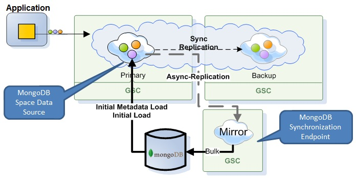

comes with built in implementations of Space Data Source and Space Synchronization Endpoint for MongoDB, called MongoSpaceDataSource and MongoSpaceSynchronizationEndpoint, respectively.
MongoSpaceDataSource
MongoSpaceSynchronizationEndpoint

For further details about the persistency APIs used see Space Persistency.